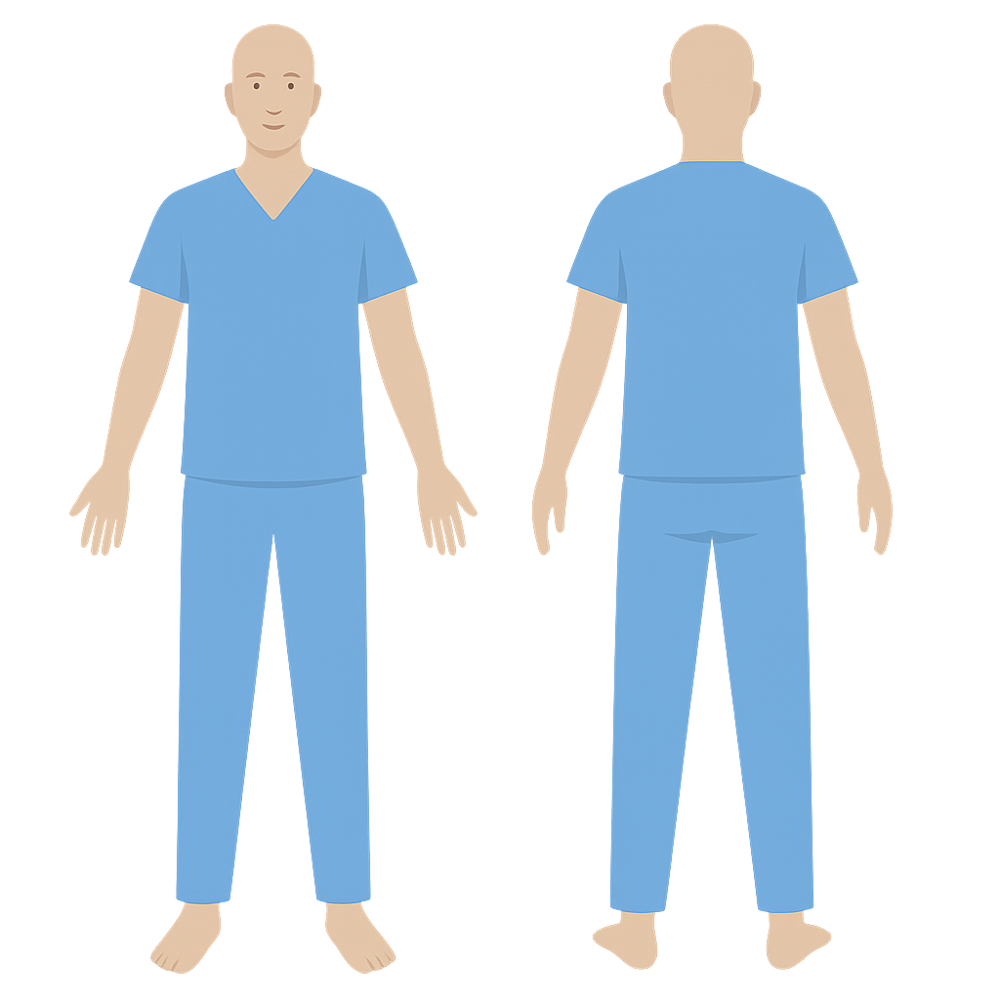

PiouPiouMatic v3 — Face & Dos
Fond noir • Texte blanc • Une modal • Zones précises

Face = gauche • Dos = droite • Survolez pour voir la zone
Ajouter une blessure
Partie: --
Vue
Face
Dos
Type de blessure
Douleur (1–10)
Valeur:
5
/10
Symptômes suggérés
—
Traitements recommandés
—
Annuler
Ajouter